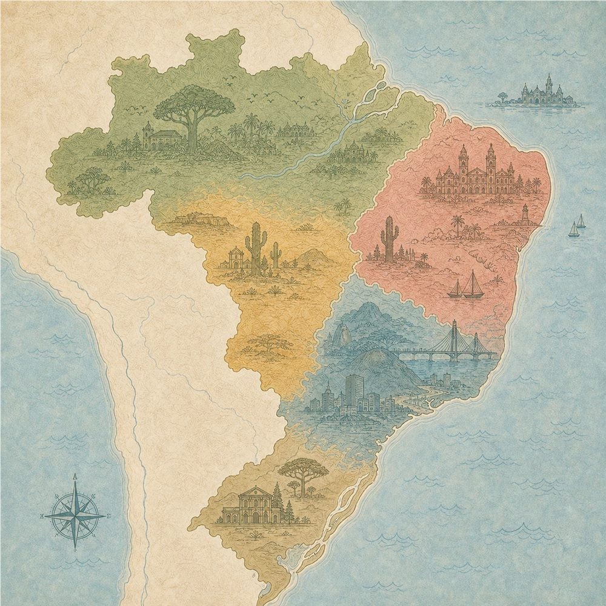

Variação linguística · vozes, contexto e interlocução
Como as escolhas da língua revelam quem fala?
Explore situações de comunicação, ouça os trechos e encontre as marcas que indicam locutor, interlocutor e contexto.

Trecho selecionado
Mensagem da família
Mensagem de uma mãe para o filho depois da aula.
Oi, meu filho! Tudo bem
por aí? Aqui
tá tudo certo.
Não esquece de almoçar direitinho, tá? E me manda mensagem quando chegar da escola, por favor.
Um beijo grande! Mamãe.
Não esquece de almoçar direitinho, tá? E me manda mensagem quando chegar da escola, por favor.
Um beijo grande! Mamãe.
Minha trilha
Etapa 3 de 4
Explore os contextos e confirme uma análise para concluir.
Quiz do professor
Revisão da trilha
Consultando atividades publicadas...